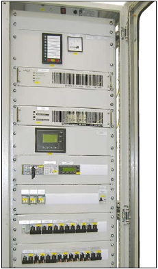

AC auxiliaries switchgears 110/120 V
FC auxiliaries switchgears offered by ZPAS are indoor structures, designed for supplying auxiliary demand of MV and LV switchrooms.FC switchgears are made based on of SZE2 enclosures with dimensions 2000 x 600-800 x 600-800 mm.
Depending on customer requirements or equipment provided by the technical design, cabinet construction can be customized to individual needs – both in terms of dimensions and equipment.
A typical configuration of FC switchgears:
- glazed front door,
- set of 19" mounting profiles in front and rear of the cabinet,
- equipment protected by IP 30 masking panels,
- access to equipment on one side,
- descriptions made as requested and according to standard of the facility which the switchgears are designed for,
- plinth with a height of 100 or 200 mm, solid or perforated.
Guaranteed voltage switchgears are intended for supplying appliances of critical internal functions of the station, such as secondary protection circuits, control circuits and emergency signalling circuits. 230 V AC switchgears are equipped with inverters, whereas 24-48 V DC switchgears have power supplies with parameters in accordance with the station design. For protecting outgoing feeds, fused load break switches, e.g. Nh, TYTAN II, circuit breakers or thermal fuses are used. Each outgoing track is led to the terminal block. Switchgears are equipped with measurement of current and voltage of each incoming feed. Meters can be located on switchgear door or inside the cabinet on masking panels. Switchgears are equipped with signalling and emergency circuits incorporated into the central signalling system. 